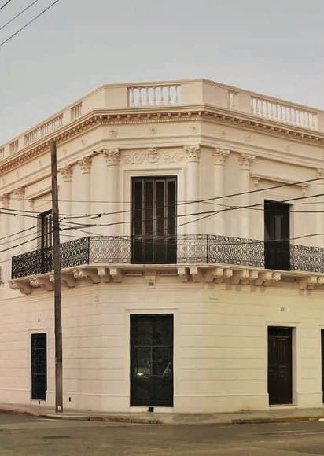

CASA
Construida a fines del siglo XVIII por la familia Diez de Andino y habitada por el Brigadier Estanislao López entre 1819 y 1838, esta casona es uno de los exponentes más valiosos de la arquitectura colonial en el Paseo de las Tres Culturas.